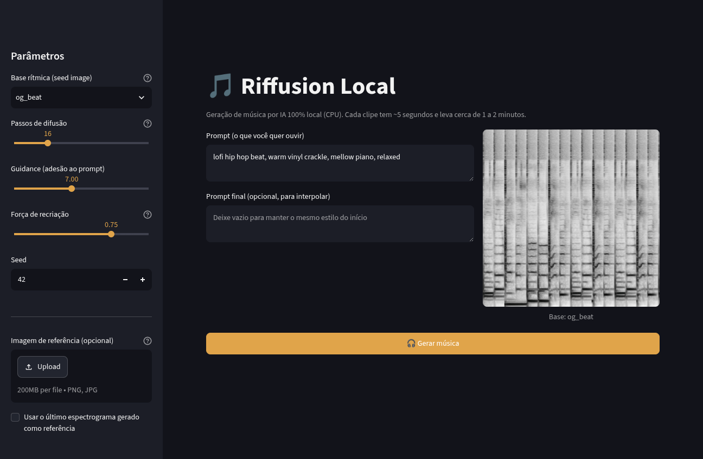

🎵 Riffusion Local — como usar

Geração de música com IA 100% local, sem internet, no CPU (o GPU AMD RX 580 não é usado porque o PyTorch não tem backend Vulkan; ROCm não suporta Polaris).
Primeira vez (instalação)
git clone https://github.com/ricb86/riffusion-cpu-local.git
cd riffusion-cpu-local
./setup.sh # cria .venv, instala dependências e baixa o modelo (~4 GB)
./install-desktop.sh # opcional: atalho no menu e na área de trabalho
A instalação compila tokenizers e safetensors do zero (15–30 min) porque não existem
wheels para Python 3.12. Não é preciso sudo.
Iniciar
Opção 1 — ícone na área de trabalho
Clique duas vezes em “Riffusion Local” (na Área de Trabalho ou no menu de aplicativos).
Abre uma janela de terminal e o navegador em http://127.0.0.1:8501.
Opção 2 — terminal
./run.sh # dentro da pasta do projeto
Feche a janela do terminal (ou Ctrl+C) para encerrar o servidor.
Gerar música
- Escreva o prompt em inglês (o CLIP do modelo foi treinado em inglês):
lofi hip hop beat, warm vinyl crackle, mellow piano, relaxed - Ajuste na barra lateral: - Base rítmica – o “groove” inicial (og_beat, agile, motorway, funk, rock…) - Passos de difusão – 8 (rápido) até 40 (melhor). Cada passo ≈ 6 s. - Guidance – o quanto seguir o prompt (7 é o padrão). - Força de recriação – 0.75 padrão. - Seed – mesmo número + mesmo prompt = mesmo resultado.
- Clique em 🎧 Gerar música e aguarde (16 passos ≈ 95 s para ~5 s de áudio).
- O player aparece na tela e o arquivo é salvo em
~/AI-Music/outputs/.
Dicas de prompt: cite gênero + instrumentos + clima.
Ex.: aggressive drum and bass, distorted bass, fast breakbeat, dark
Ex.: ambient pad, slow strings, cinematic, dreamy, reverb
Onde ficam as coisas
| Item | Caminho |
|---|---|
| Programa | pasta do clone (ex.: ~/riffusion-cpu-local) |
| Modelo (4 GB) | ~/AI-Music/models/riffusion-model-v1 |
| Músicas geradas | ~/AI-Music/outputs |
| Ambiente Python | ~/AI-Music/riffusion-hobby/.venv |
| Log do servidor | terminal onde o run.sh foi iniciado |
Desempenho
- Máquina: Xeon E5-2580 v4 (14 núcleos), 15 GB RAM, sem GPU utilizável.
- 512×512, float32 no CPU: ~6,2 s por passo.
- Clipe de ~5,1 s: 8 passos ≈ 50 s · 16 passos ≈ 95 s · 30 passos ≈ 3 min.
- RAM: ~8 GB durante a geração (cabe nos 15 GB; há 31 GB de swap de reserva).
Se algo der errado
- Porta ocupada:
RIFFUSION_PORT=8502 ./run.sh - Modelo em outro lugar:
RIFFUSION_CKPT=/caminho ./run.sh(ou editeRIFFUSION_CKPTnostreamlit_app.py). - Baixar/refazer o modelo:
./download_model.sh(retoma downloads interrompidos). - Recriar o ambiente: veja as versões exatas em
requirements-lock.txt.
Notas técnicas (o que foi adaptado)
O projeto original é de 2022/2023 (Python 3.9/3.10). Para rodar em Python 3.12 neste
micro sem sudo, foram necessários:
- venv criada a partir do Python 3.12 do conda (
py312), com dependências antigas fixadas:transformers 4.26.1,diffusers 0.9.0,huggingface_hub 0.16.4,accelerate 0.18.0,numpy 1.26.4,scipy 1.13.1. tokenizers 0.13.3esafetensors 0.3.1compilados do zero (não existem wheels para cp312). Foi preciso: Rust estável + GCC/G++/binutils do conda-forge (sem root),pkg-confige headers do OpenSSL do conda, além deRUSTFLAGS="-A invalid_reference_casting".torch 2.6.0+cpu(wheels oficiais CPU) — o wheel padrão do PyPI é CUDA e não carrega sem driver NVIDIA.riffusion/spectrogram_converter.py: removidos os parâmetrosmax_iter,tolerance_loss,tolerance_changeesgdargsdoInverseMelScale(extintos no torchaudio 2.x).streamlit_app.py: interface nova, em português, com player, download e histórico do último resultado.